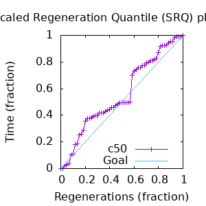
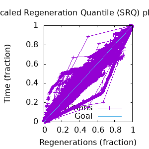

MCMC Post-hoc Analysis
Data & Model
| Partition | Sequences | Lengths | Alphabet | Substitution Model | Indel Model | Scale Model |
|---|
| 1 |
/home/rlouden/phylogeny/HisGS_21May.txt |
160 - 238 |
Amino-Acids |
S1 = lg08 +> f +> Rates.gamma(n=4) |
I1 = rs07 |
scale1 ~ gamma(0.5, 2) |
Scalar variables
| Statistic | Median | 95% BCI | ACT | ESS | burnin | PSRF-CI80% | PSRF-RCF |
|---|
| likelihood |
-2.415e+04 |
(-2.42e+04, -2.41e+04) |
86.85 |
1559.0 |
221.0 |
1.0 |
0.9968 |
| #indels |
193 |
(184, 201) |
301.4 |
449.0 |
2046.0 |
0.9565 |
1.003 |
| #substs |
4729 |
(4701, 4754) |
1416.0 |
95.0 |
2327.0 |
0.9714 |
1.021 |
| rs07:mean_length |
4.516 |
(3.793, 5.337) |
77.33 |
1751.0 |
284.0 |
1.001 |
1.001 |
| rs07:rate |
0.01125 |
(0.009422, 0.01315) |
10.48 |
12928.0 |
766.0 |
1.0 |
1.001 |
| P1/#indels |
193 |
(184, 201) |
301.4 |
449.0 |
2046.0 |
0.9565 |
1.003 |
| P1/#substs |
4729 |
(4701, 4754) |
1416.0 |
95.0 |
2327.0 |
0.9714 |
1.021 |
| P1/likelihood |
-2.415e+04 |
(-2.42e+04, -2.41e+04) |
86.85 |
1559.0 |
221.0 |
1.0 |
0.9968 |
| P1/prior_A |
-1729 |
(-1794, -1666) |
290.8 |
465.0 |
2112.0 |
1.002 |
0.9998 |
| P1/|A| |
569 |
(540, 595) |
1408.0 |
96.0 |
3705.0 |
0.9722 |
1.005 |
| P1/|indels| |
703 |
(654, 762) |
226.7 |
597.0 |
1772.0 |
0.9855 |
0.9969 |
| Rates.gamma:alpha |
0.5538 |
(0.5056, 0.6082) |
70.04 |
1934.0 |
84.0 |
1.001 |
1.006 |
| f:pi[A] |
0.09725 |
(0.08912, 0.1058) |
12.66 |
10696.0 |
189.0 |
1.001 |
1.001 |
| f:pi[C] |
0.01008 |
(0.007364, 0.01301) |
8.992 |
15063.0 |
174.0 |
1.0 |
1.0 |
| f:pi[D] |
0.0601 |
(0.05327, 0.06701) |
12.98 |
10436.0 |
219.0 |
1.001 |
0.9953 |
| f:pi[E] |
0.08082 |
(0.07297, 0.08911) |
9.75 |
13893.0 |
331.0 |
1.0 |
0.9943 |
| f:pi[F] |
0.02659 |
(0.02153, 0.03199) |
9.604 |
14103.0 |
370.0 |
1.0 |
1.001 |
| f:pi[G] |
0.0681 |
(0.05934, 0.07666) |
13.12 |
10324.0 |
506.0 |
1.001 |
0.9991 |
| f:pi[H] |
0.02422 |
(0.02044, 0.02824) |
8.925 |
15176.0 |
133.0 |
1.0 |
0.9966 |
| f:pi[I] |
0.05239 |
(0.04633, 0.05871) |
11.17 |
12129.0 |
173.0 |
0.9995 |
0.9976 |
| f:pi[K] |
0.06266 |
(0.05651, 0.06907) |
10.17 |
13316.0 |
181.0 |
1.0 |
0.9987 |
| f:pi[L] |
0.09431 |
(0.08475, 0.1042) |
11.29 |
11993.0 |
53.0 |
1.0 |
0.9994 |
| f:pi[M] |
0.01926 |
(0.01623, 0.02255) |
8.873 |
15266.0 |
152.0 |
0.9998 |
0.9992 |
| f:pi[N] |
0.04083 |
(0.03578, 0.046) |
9.672 |
14005.0 |
154.0 |
0.9996 |
0.9905 |
| f:pi[P] |
0.04749 |
(0.0401, 0.0555) |
10.02 |
13525.0 |
305.0 |
1.0 |
0.9959 |
| f:pi[Q] |
0.04999 |
(0.04485, 0.05522) |
9.448 |
14337.0 |
582.0 |
0.9998 |
0.9935 |
| f:pi[R] |
0.07183 |
(0.06393, 0.07979) |
11.79 |
11493.0 |
115.0 |
1.001 |
1.007 |
| f:pi[S] |
0.05509 |
(0.04957, 0.06061) |
9.946 |
13619.0 |
259.0 |
1.001 |
1.001 |
| f:pi[T] |
0.04665 |
(0.04132, 0.05204) |
9.536 |
14205.0 |
111.0 |
1.0 |
1.004 |
| f:pi[V] |
0.06467 |
(0.05818, 0.07123) |
9.945 |
13620.0 |
169.0 |
0.9999 |
1.001 |
| f:pi[W] |
0.003949 |
(0.001874, 0.006521) |
9.423 |
14375.0 |
771.0 |
1.001 |
1.009 |
| f:pi[Y] |
0.0224 |
(0.01759, 0.02776) |
19.73 |
6867.0 |
83.0 |
1.001 |
0.9989 |
| prior_A |
-1729 |
(-1794, -1666) |
290.8 |
465.0 |
2112.0 |
1.002 |
0.9998 |
| scale |
35.85 |
(30.19, 42.11) |
3.128 |
43303.0 |
91.0 |
1.0 |
1.001 |
| scale*|T| |
40.55 |
(38.13, 43.74) |
109.6 |
1235.0 |
380.0 |
1.001 |
0.9998 |
| scale1 |
35.85 |
(30.19, 42.11) |
3.128 |
43303.0 |
91.0 |
1.0 |
1.001 |
| scale1*|T| |
40.55 |
(38.13, 43.74) |
109.6 |
1235.0 |
380.0 |
1.001 |
0.9998 |
| |A| |
569 |
(540, 595) |
1408.0 |
96.0 |
3705.0 |
0.9722 |
1.005 |
| |T| |
1.135 |
(0.9644, 1.314) |
1.0 |
135458.0 |
91.0 |
0.9999 |
1.0 |
| |indels| |
703 |
(654, 762) |
226.7 |
597.0 |
1772.0 |
0.9855 |
0.9969 |
| posterior |
-2.544e+04 |
(-2.55e+04, -2.538e+04) |
144.8 |
935.0 |
2122.0 |
1.005 |
1.004 |
| prior |
-1287 |
(-1364, -1213) |
224.8 |
602.0 |
2085.0 |
1.002 |
1.0 |
Phylogeny Distribution
Alignment Distribution
Partition 1
|
|
|
Diff |
|
Min. %identity |
# Sites |
Constant |
Informative |
| Initial |
FASTA |
HTML |
Diff |
AU |
1.76% |
238 |
0 (0%) |
235 (235%) |
| Best (WPD) |
FASTA |
HTML |
|
AU |
24.1% |
538 |
13 (2.42%) |
286 (286%) |
| Ancestral |
FASTA |
HTML |
|
|
23.1% |
538 |
13 (2.42%) |
339 (339%) |
Mixing
|
Statistics:
| scalar burnin | 3705 |
| scalar ESS | 95.64 |
| topological ESS | 11.233 |
| ASDSF | 0.021 | | MSDSF | 0.214 | | PSRF CI80% | 1.005 |
| PSRF RCF | 1.021 |
|
  |
Analysis
command line: bali-phy /home/rlouden/phylogeny/HisGS_21May.txt --smodel 'lg08 +> Rates.gamma(n=4)'
directory: /home/rlouden/phylogeny
version: 4.0-beta15
| chain # | burnin | subsample | samples | subdirectory |
|---|
| 1 |
7508 |
1 |
67878.0 |
HisGS_21May-1 |
| 2 |
7508 |
1 |
67578.0 |
HisGS_21May-2 |
Model and priors
Tree (+priors)
| topology | uniform |
| branch lengths | ~iidMap(branches(tree), gamma(0.5, /(2, num_branches(tree)))) |
Substitution model (+priors)
| S1 | = |
lg08 +> f +> Rates.gamma(n=4)
| f:pi | ~ | symmetric_dirichlet_on(letters(@a), 1)
|
| Rates.gamma:alpha | ~ | log_laplace(6, 2)
|
|
Indel model (+priors)
| I1 | = |
rs07
| rs07:rate | ~ | log_laplace(-4, 0.707)
|
| rs07:mean_length | ~ | shifted_exponential(10, 1)
|
|
Scales (+priors)
Model Code
{kind=link}
{kind=link}
{kind=link}
{kind=link}
{kind=link}
{kind=link}
{kind=link}
{kind=link}
{kind=link}